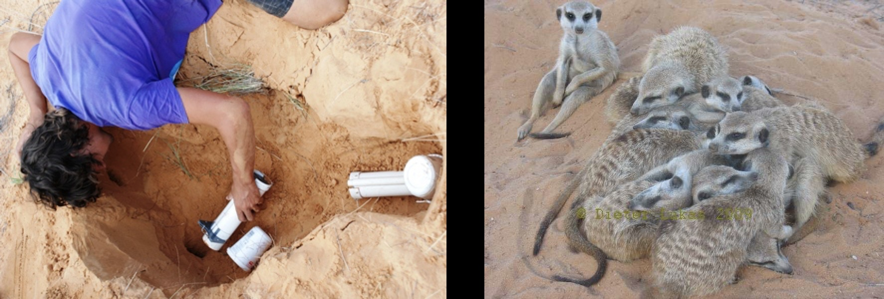
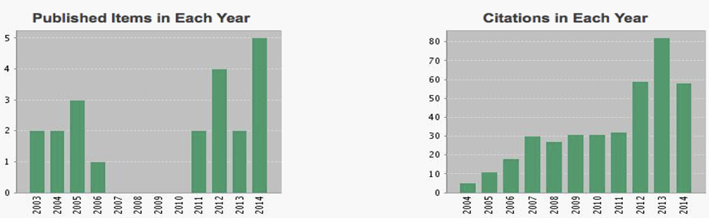

What to do in academia?
The general advice I received is “choose a question, then an approach, then a study system”. Ideally, you will be able to establish a strong independent research niche with a clear future trajectory - something academic you are known for. In some way, there is still a perception that someone who addresses an open question is an academic while someone who is a specialist in an approach is a research technician. However, your niche does not have to be anything novel, you can combine different interests to create a niche, and it can be something where you are still learning a lot yourself. Maybe one way to think about it is to consider how a search committee going through their list will perceive you: will they immediately have an image of your research associated with you and see something that provides a clear fit within a research institution, including the profile you would bring, the potential overlap in interest, the courses you could teach and approaches PhD students would learn? As you are setting out on this path, you might also have to consider other things, such as feasibility, risk, and novelty (see below). These are factors to personally weigh and might sometimes even be outside of your own control.
Fit versus feasibility
Most post-PhD positions come with limitations: these might be in terms of where you are based, how much money you have for your project, and how much time you have (most fellowship and postdoc positions tend to last 3 years or less). Accordingly, you might have to figure out whether you would be able to achieve the perfect approach in the perfect study system. In addition, fundamental constraints might prevent you from using the perfect approach in the perfect study system.
More general, in terms of fit, when choosing your approach, you should also consider how motivated you are to spend a given day with a given activity: do you like repetitive computer work, following detailed protocols in the laboratory, having nothing happen for hours at end in the field? While you might be excited about a particular question, it is worth considering what answering this question would involve.

The image illustrates how feasibility might influence the choice of a study system. A research group I was previously part of is interested in the evolution of cooperative breeding in mammals. Molerats were long described as the most extreme example of cooperative breeding, but because they live underground, it has only recently been possible to study them in more detail in the wild (picture on the left). Instead, the research group focused on meerkats, which live above ground, in open habitat, and are active during the day - and therefore much more feasible to study.
Risk versus reward
A related decision to make with regards to the potential limitations in any position is how much risk and investment you are able to afford. Evaluators tend to expect to see products (publications) coming out of any position so taking risks or large investments without immediate returns might lead to a CV that could get you judged as less efficient as someone who produced a steady set of publications. In turn though, you might have to take risks in order to show indepence and establish your research niche. Luck plays a huge role, and small differences early on can have huge knock-on effects. Some of this is hopefully changing, as the principles of open science are taking hold and shifting the focus from an evaluation of the endproduct to the actual research activity.

Right after my PhD, I started to collect data on a large sample, which took more than 3 years. I did not get any publications during this time (left image). I felt I could take this risk and investment, because I had a supervisor who strongly supported the project: I knew he would explain the situation in any reference letter and he was proactive in seeking funding to extend my position, which luckily we got. For me, this investment in building a comprehensive database was worth it. I have since been able to test various hypotheses using these data, resulting in multiple articles. I think these articles are stronger because I made this investment (right image). It also allowed me to establish a niche for myself, resulting in collaborations and a clearer vision of what I wanted to do after my first post-PhD position.
Novelty versus building on strength
Especially during the first position right after your PhD, you have some freedom for change: you can change the question you want to focus on, learn a completely new approach, or change the culture and setting you are based in. This might allow you to build new connections and broaden your horizon. However, alternatively you might want to build on your existing skills and connections. Often there still seems to be a preference for people who have been at multiple institutions and also have experience in multiple countries. Recently, these perceptions seem to have slightly been starting to change, as people realize that not everyone might be able to uproot their life.
Right after my PhD, I moved from Leipzig in Germany to Cambridge in the UK. The project sounded very interesting to me and it was a position working with a strong supervisor in a fascinating department. But what really helped was that I already had some friends there and that during my interview I enjoyed my interactions with the other members of the research group. This made the move easier. Afterwards, I was lucky that through additional funding, I was able to have three consecutive postdoc positions in the same research group so I did not have to move frequently. I am now back in Leipzig at the same research institute, but in a different department from where I did my PhD. Before the round of applications that led to my current position at the MPI EVA, my partner and I decided to draw up a wishlist of points for any new place, which we used to decide on whether to even consider applying. These points focused on our personal preferences of the place we wanted to be in rather than just an academic fit: the size of the town, having friends, preferred climate, etc. I only applied for positions in places that ticked at least half of the boxes on the list.